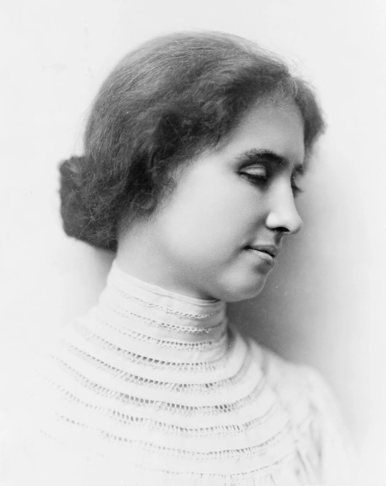

BLINDNESS
Blindness is a lack of vision.
It may also refer to a loss of vision that cannot be corrected with glasses or contact lenses.
Partial blindness means you have very limited vision.
Complete blindness means you cannot see anything and do not see light.
Challenges blind people face when living life
Access to information:
The major sensory organ of a person is their eyes. One glimpse around us is enough to
make us realize how visual is most of the information in our environment.Timetables in
train stations, signs indicating the right way or potential danger, these are all the
visual types of information we all come across in our daily life. Most of this information
is inaccessible for the blind and the visually impaired, inhibiting their independence,
since access to information signifies autonomy.
Overly helpful individuals:
It's very common for sighted individuals, strangers, friends or family, to be overly
excited to help a visually impaired person. Blind people might perform a regular task
slower but that doesn't mean they're incapable of completing it. Rushing to help the
visually impaired without asking or being asked to do so, might make them feel helpless
instead of independent.
Types of Blindness
CVI
CVI, or cortical/cerebral visual impairment, is the leading cause of modern day blindness in children. Unlike ocular forms of visual impairment, CVI is a brain-based disorder,
and often coexists with an additional visual impairment. A child with CVI, for example, may see the world as a swirling mass of color.
Treatement: There's no cure for CVI, but vision rehabilitation
can help people with CVI make the most of their vision.
For some people with CVI,
vision problems get better over time on their own.
Retinitis Pigmentosa
Retinitis pigmentosa is a genetic disorder, which affects up
to one in 4,000 people in the U.S.
People with this eye condition often have trouble seeing
at night.
Treatement: Although there is no cure for RP,
treatments are available for managing some aspects of its clinical
manifestations.
Macular Degeneration
Macular degeneration is another one of the leading causes of vision loss, affecting an estimated 10 million people in the U.S.
There are a few types of this condition, but the most common is called dry macular degeneration. This type of visual impairment is found in adults, and causes a person’s central vision to deteriorate.
Treatement: There's currently no treatment for early AMD, so your eye doctor will probably just keep track of how your eyes are doing with regular eye exams. Eating healthy, getting regular exercise, and quitting smoking can also help.
BRAILLE
Braille is a tactile writing system
used by people who are visually impaired,
including people who are blind,
deafblind or who have low vision.
It can be read either on embossed paper or
by using refreshable braille displays that connect to
computers and smartphone devices.

"Helen Keller,
American author and educator who was blind and deaf.
Her education and training represent an extraordinary
accomplishment in the education of persons with these disabilities.
Helen Keller was the first deaf and blind person to earn a college degree.
She graduated from Radcliffe College, with honors."
"The best and most beautiful things
in the world cannot be seen or even
touched,they must be felt with the heart."
- HELEN KELLER
"Kindness is a language which the deaf can hear and the blind can see."